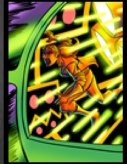

209 posts · 11342 views · started 2014-08-14 06:05 UTC
SI
Silverleaf
2014-08-14 06:05 UTC
#1
Sentinels Sidekick on my iPad decided it wanted to update just now, and it claimed that the app now supports The Super Scientific Tachyon promo.
Wait, what? Why haven't I heard about this? And how do I get it?
SI
Silverleaf
2014-08-14 06:09 UTC
#2
Oh. By playing the video game at GenCon or Pax Prime. This makes me very very sad - I will never be able to afford to get to a convention in the US.
Will it be available for home printing like the others? Tachyon's one of my favourites and I'd hate to miss this due to my Britishness. :(
DP
dpt
2014-08-14 06:28 UTC
#3
Can you give more details? Is there an actual physical card one can get? If so, I'd be happy to make sure you get a copy (eg, by playing the game here at GenCon and sending you the copy I get).
LE
LeperKhan
2014-08-14 06:31 UTC
#4
Hmm, that is a shame! Although I'm certainly not across the Atlantic, it is disappointing that I cannot get one of these because of my inability to go to these events...Silverleaf, you and I can scour BGG for the card to inevitably appear, hahaha.
KO
Koga
2014-08-14 07:35 UTC
#5
So that card is where that picture of Unity behind the blue glass is from.
RO
Ronway
2014-08-14 11:56 UTC
#6
A new promo card that I never heard of? What the frig is going on?
P2
Powerhound_2000
2014-08-14 12:00 UTC
#7
I don't think you are alone Silverleaf as that is news to me as well. Does it even give you an idea as what this alt Tachyon does?
In the absence of any facts it's time for wild speculation!
Not only is Tachyon being Scientific, she's being SUPER scientific so whatever ability it is will not just be awesome but super-awesome.
They've already had a promo where she's a leader and can benefit everyone and a regular card where she can help her get bursts into her trash so nothing like that this time around.
Tachyon was a scientist before she became a superhero so she's obviously going back to her roots.
Unity is cheering her on so it must involve explosions.
Conclusion
I don't know. Increased damage to villain targets as she researches new super-explosive methods of defeating people?
EDIT:DAMNIT! Too late!
RA
Rabit
2014-08-14 12:14 UTC
#11
Looking forward to seeing it!
RO
Ronway
2014-08-14 12:15 UTC
#12
I think you folks forgot to mention "Just be Ronway" as a way to get the Promo…
LY
lynkfox
2014-08-14 13:04 UTC
#13
wow!
I put it up on the wiki - when someone gets their hands on it, can you let me know the incaps? :)
PY
Pydro
2014-08-14 13:08 UTC
#14
So, anyone want to get/hold a copy for me? I won't be there until Sunday.
MI
MigrantP
2014-08-14 13:08 UTC
#15
In case the Sidekick update notes and blog post aren't clear to anyone: if you are among the first 5,000 players to buy the video game this Fall, we will mail you a copy. Anywhere in the world. So you don't need to go to a convention to get the card.
RO
Ronway
2014-08-14 13:10 UTC
#16
Looks like I will need to get a hold of a tablet...
CH
chainsawrabbit
2014-08-14 13:27 UTC
#17
Same boat. I have friends with tablets, though, who don't own SotM but enjoy playing the game with me. Wonder if any of them would be willing to split the cost.
MR
MrLeRobot
2014-08-14 13:29 UTC
#18
Wich platform? Could we simply buy the game and call it a day…!?
(If it's the case, I'd gladly offer a brand new copy of SotM: The video game to the first taker )
MI
MigrantP
2014-08-14 13:35 UTC
#19
The game will be available simultaneously on Android tablets and iPad.
P2
Powerhound_2000
2014-08-14 13:38 UTC
#20
Any idea on the exact release date then? The post just lists this fall
SP
Spiff
2014-08-14 13:40 UTC
#21
"Super Scientific Tachyon" sounded like a Guise alt character card to me for sure. :)
I've added SS Tachyon to my randomizer, because why not. Also, she's officially the 50th hero (counting each alt version as its own hero) in the game. She gets the bi-centennial no-prize. Congratulations, Tachyon!
YO
youperguy
2014-08-14 13:53 UTC
#22
Does this tie her with Wraith or is she still one behind in promos?
RO
Ronway
2014-08-14 13:54 UTC
#23
Yes, this ties her with The Wraith, Legacy, Bunker, Tempest, Fanatic, and Haka.
MI
MigrantP
2014-08-14 14:03 UTC
#24
Exactly between September 22 at 10:29 P.M. EDT, and December 21 at 6:02 P.M. EST. =)
P2
Powerhound_2000
2014-08-14 14:15 UTC
#25
Well at least I know for sure what date to start obsessively searching the App Store.
MA
Matchstickman
2014-08-14 14:48 UTC
#26
Ooooooor you could not spend a couple hundred for a tablet and wait for the unlimited version (of the promo).
I will be buying the 'app' when it comes to PC, I won't be shelling out for a device I don't need. Not even for a super sweet Tachyon promo.
MI
MigrantP
2014-08-14 14:53 UTC
#27
Don't worry, it won't be a surprise. When the game is closer to being ready, we'll announce a release date.
LM
logan_mann
2014-08-14 15:05 UTC
#28
Will this be included in the end of all things promo pack release? I play board and card games cause I don't like video games much. I appreciated that they didn't put sentinels promo material in the tactics kickstarter, keep separate things separate. Im sad its being done now.
MI
MigrantP
2014-08-14 15:17 UTC
#29
It will indeed be in the end of all things. FWIW, the video game is a faithful digital adaptation of the card game, it's not a different game.
P2
Powerhound_2000
2014-08-14 15:20 UTC
#30
I expected as much. I just wish I'd been selected as a playtester
MI
MigrantP
2014-08-14 15:38 UTC
#31
Hey guys - if you are at Gen Con, turns out there is a shipping delay and the promo cards will not be there until Friday. Sorry for the inconvenience!
SP
Spiff
2014-08-14 16:11 UTC
#32
Save mine for PAX, please. See you there! :)
SI
Silverleaf
2014-08-14 16:38 UTC
#33
I have an iPad, and I was totally going to get this anyway. Couple of questions:
1) Price?
2) For people who are unlucky enough to miss it, will the card images be released so we can proxy it?
And also, if anyone happens to get a spare one at GenCon or Pax... I'll swap it for a crocheted Sentinels doll. Because I love Tachyon!
CH
chainsawrabbit
2014-08-14 16:44 UTC
#34
Since the game will be available for iOS devices, does that mean only iPads, or will it also be available for iPhones and iPod Touches (which are essentially iPhones that don't make phone calls, a claim I've heard about iPhones as well)?
MI
MigrantP
2014-08-14 16:53 UTC
#35
We have not announced a price, that will likely be announced when we have a final release date.
I don't know about the card images, but I don't see why not.
It will not be available initially for iPhone and iPod touch (or Android phones). Just Android tablets and iPad. The phone form factor is very difficult for a game like SotM. It's something we'll look into for later, but I can't promise anything.
SE
Sefirit
2014-08-14 18:07 UTC
#36
Do we have any idea what the incap side looks like, or what the powers are?
MC
McBehrer
2014-08-14 18:29 UTC
#37
Since I don't have a tablet, and can't make it to the conventions, but I am a faithful playtester and long-time customer, any chance I could get a copy of the promo?
Pleeeeeeeeeeeease?
SP
Spiff
2014-08-14 18:31 UTC
#38
I'll put up an oversized version on my site as soon as I can get ahold of the art. Just as good. You'll be all set, buddy.
JA
jagarciao
2014-08-14 20:41 UTC
#39
If you have their app you can see the incap side image (no text).
Here's a super lo res picture

MA
Matchstickman
2014-08-14 21:43 UTC
#40
This is her origin story promo, woot!
MU
Multiguy
2014-08-14 23:17 UTC
#41
So are the first 5000 players both tablet and ipad adds together or seperate?
I need to get a tablet for this game. Any suggestion?
SP
Spiff
2014-08-14 23:21 UTC
#42
http://store.apple.com/us/ipad ?
MI
MigrantP
2014-08-14 23:28 UTC
#43
It's the first 5000 players regardless of platform. The iPad Air is a fantastic device.
PH
phantaskippy
2014-08-15 00:27 UTC
#44
Tachyon is going to be ridiculous with this new promo.
Two Cards from her deck to her trash, or into play? in her deck that's a lot of one-shots.
I need this card.
PY
Pydro
2014-08-15 00:33 UTC
#45
No, you play it on the Advanced Ennead every turn.
P2
Powerhound_2000
2014-08-15 00:34 UTC
#46
It's not just limited to Tachyon's deck. The power lists the bottom two cards of a deck. I would say that with the amount of cards with the one-shot keyword she will use it on herself most often.
EV
EvanDan55
2014-08-15 00:43 UTC
#47
Saw it today at GenCon on a screen--she looks lovely. Can't wait to play as her.
We miss you guys here at the convention! We miss you dearly. We think of you often. We'll send pictures soon. Mostly of me and Craig being silly.
MC
McBehrer
2014-08-15 01:15 UTC
#48
Also great for heroes who have a lot of the same types of cards; ExPatriette and Omnitron-X have a LOT of equipment cards, and Legacy, The Naturalist, and The Scholar sure loves his ongoings. Setback has all those one-shots, and I don't think it's too much of a spoiler now to say that Captain Cosmic has lots of Constructs.
Not to mention that Argent Adept can directly place cards on the bottom of his deck...
DR
Dryden
2014-08-15 03:30 UTC
#49
Wrath of the Cosmics is doing really well! Maybe you guys could add this to the rewards ^_^.
PH
phantaskippy
2014-08-16 02:30 UTC
#50
The best thing about this is that someday there will be a copy of this card with different art.
Honestly the coolest thing about promos to me is that every one is going to have 2 versions with different art.
MU
Multiguy
2014-08-16 05:43 UTC
#51
How's the game running on nexus 7? The iPad Air is expensive and I'm a liitle tight on budget.
UN
Under3
2014-08-16 05:44 UTC
#52
To be honest I’m a little disappointed with this promo.
GSF and Tactics didn’t have any Sentinels related stuff so that you didn’t need a different game to get everything.
So far I’ve been able to get every promo purely by being a fan of and supporting the card game, this changes that.
I hope it is being considered to have this exact promo available in some other way related just to the card game itself.
MC
McBehrer
2014-08-16 07:49 UTC
#53
Honestly? My thoughts exactly.
CM
cmschex
2014-08-16 11:14 UTC
#54
Concur
MI
MigrantP
2014-08-16 14:21 UTC
#55
The game will run fine on a Nexus 7.
MI
MigrantP
2014-08-16 14:29 UTC
#56
I don't consider the video game to be a "different game" - it's a faithful adaptation of the card game to a digital format. It is Sentinels of the Multiverse, not another game.
This promo card will also be available in the "end of days" promo card release, like all the other promo cards.
UN
Under3
2014-08-16 15:24 UTC
#57
The problem with that view, it isn’t the same game, they are two separate entities. Cards don’t interact with the app, and the additional hardware is totally unnecessary for and unlikely to be owned by all players of the card game - there is no functional crossover between the two.
It is an adaptation, it is not the same game.
Now don’t get me wrong, it looks like it’s shaping up to be a great looking faithful version, which sure you should be proud of, but let’s not have that prevent us from calling a spade a spade.
PH
phantaskippy
2014-08-16 16:05 UTC
#58
it is the exact game, in digital format.
Also it is a promo card, if you don't get it you can print out a facsimile of it. If not having an official limited run special card bothers you then do your best to figure out a way to get one.
It isn't a big deal.
RO
Ronway
2014-08-16 16:09 UTC
#59
I'm holding up a liquor store as we speak. Going to use the money to afford gas to drive to Indianapolis and to get a day pass for Gencon!
PH
phantaskippy
2014-08-16 16:24 UTC
#60
Heck Yeah!! Follow your dreams!
GR
Greywind
2014-08-16 17:28 UTC
#61
It is for a completist.
RE
Reckless
2014-08-16 17:37 UTC
#62
It isn't a big deal to you. It sounds like it is a very big deal to some of the other members of this forum.
I understand where both sides are coming from. It's Sentinels, but digital, so it is a SotM product. It's also not part of the main, hard-copy card game, so it can also feel like it isn't a SotM product. I was planning on buying the game in the first place so it doesn't affect me much, but I definitely understand some people feeling a little jerked around wanting to have a chance at all the promos without needing to purchase something that they don't strictly "need" for the actual card game. That being said Greater Than Games has been really cool letting people have access to their cards on sites like BGG so that they can still play with them even if they don't have an "official" copy.
I'd sure love an official one, though.
I'm super nervous that I won't be one of the first 5,000 to play the game. I'm not gonna explode or lose all joy and happiness if I don't have it, but I'd sure like to have it. Only time will tell, I suppose!
CM
Chromium_Man
2014-08-16 17:45 UTC
#63
I'm with Reckless on this one. I plan on getting the app as soon as it comes out, assuming I have my iPad by then (I am getting a free one from work, but not until November). If I don't have my iPad by then, I'll download the app on a friend's and just have them give me the card. However, I don't like the limited nature of it. I think 5000 is a lot of downloads especially if I'm on the lookout, but I would hate to jump through hoops to get the promo only to find out I missed the cutoff.
RE
Reckless
2014-08-16 17:54 UTC
#64
Anyone wanna form a coalition to inform one another of when it is released? We could call ourselves "Sentinels of the Super Scientific Tachyon".
SI
Silverleaf
2014-08-16 18:12 UTC
#65
Add me to the list of people worried they'll miss it. And I'm extra worried because it's TACHYON! If it wasn't one of my favourite heroes I wouldn't care quite so much...
Also I saw SST in play last night. She was awesome and interesting, and have I mentioned that I love Tachyon?
RE
Reckless
2014-08-16 18:18 UTC
#66
Agreed. Tachyon is fantastic.
I love Super Sonic Tachyon and the Prime Wardens cards just because they introduce promos to a lot of characters that exclusively had promos tied to the Shattered Timelines story arc. They're great and fun to play, but having the team fight yet ANOTHER non-Shattered Timelines Villain with Eternal Haka and Team Leader Tachyon was getting a little thematically stagnant for me. Having characters that are part of the SotM main timeline that we've experienced since the beginning of the game is much more exciting for me than the (very cool, but "separate") dystopian future hero promos we've had.
For what it's worth I resisted using initialisms at least three or four times for you, Silverleaf. I'm slowly breaking a habit that some members of the forum find confusing!
SI
Silverleaf
2014-08-16 18:26 UTC
#67
Noted, and appreciated.
And yeah, I agree that it's very cool to have these different promos to add thematic as well as mechanical interest to the game. Promos are awesome.
MA
MarioFanaticXV
2014-08-16 21:59 UTC
#68
Will this work when emulated on the PC? I'm not willing to buy a tablet just for this; I could use my mother's, but I don't want to have to bug her every time I want to play it (and let's face it, I don't want to have to rebuy every expansion just so I can play them on an Android device); though such could be vaguely nostalgic and remind me of when I played on her cell phone before I had a GameBoy... If I recall, it only had Snake and one of those number slider games on there.
Also, any chance for a 3DS or PC version? Preferably one where we don't have to buy things seperately and can just get a compilation version for one lump sum instead of nickle and diming people through overpriced DLC, which is one of the key things that's driven me away from video games in recent years and toward table top gaming.
PH
phantaskippy
2014-08-16 22:33 UTC
#69
I'm going to have SST, I'm going to wait until someone scans images of the front and back and add the card to a print Studio order.
I understand people that want the complete set of official promos, but GtG doesn't owe that to anyone, so if you are willing to go out of your way to get it, go for it.
I don't have a problem with people wanting the card, I disagree with the notion that GtG is doing something wrong or distasteful here. It sounds similar to the pre-order fuss people were throwing about earlier promos and how GtG owes it to people to let them get cards they missed out on.
SP
Spiff
2014-08-16 22:48 UTC
#70
I agree with skippy. I don't think GtG is doing anything untoward, but I understand people's burning desire to get their hands on the goodness.
SI
Silverleaf
2014-08-16 22:57 UTC
#71
I don't think it's the same really, because this promo's being released now and we're all here, and the previous promo images are all available to print right now. It's just that despite knowing about it at the right time some/many people will be unlucky and not get the awesome new Tachyon, and that feels a little unfair to many of us I guess.
We don't even know for sure if the images will be released. Probably, but certainly not confirmed. No indication that was the plan from the start.
I don't mean to be a complainy person but I'm just explaining how I feel about tasty extras that are disproportionately easier for some people to get than others. You get the official promo here if you:
Live close to an appropriate con or can afford to travel to the location of one of said cons - perhaps thousands of miles - and be able to take time off work to attend
or
Own an expensive device that isn't required to play the card game, and therefore won't be owned by all players
and
Find out when the app is released early enough to be one of the first to get it and register it
and those seem like somewhat arbitrary things to reward fans for.
I too would be happy to let Printer's Studio print this for me. But we don't even know that the images will be released.
KA
Katsue
2014-08-16 23:39 UTC
#72
Isn't Super Sonic Tachyon the Sentinel Tactics version, and not a Promo at all?
MI
MigrantP
2014-08-17 03:30 UTC
#73
All promo cards are disproportionately easier for some people to get than others. You've had to happen to know about the game soon enough, or be at a convention, or have enough money to buy certain things. All of those things are arbitrary. Even with WotC, it costs significantly more for some people to buy it than others, due to shipping costs. And some people can't afford to buy the expansion at all.
Promo is short for "promotional" - which is exactly what this is. A promotion for the video game; just like other promo cards have been promotions for expansions, etc. All promotions cost money to implement, and are meant to increase sales of the product they are promoting (to hopefully make up for the cost of the promotion). I hope you can see that it would be counter-productive to use a promotional item in a way that would not increase sales of the product.
I cannot speak about the card images because I do not represent GTG, and that decision is in their hands.
We plan on releasing the video game to other platforms in the future. We're focusing on tablets for the initial release because they are the best market for digital board & card games.
KE
ketigid
2014-08-17 04:48 UTC
#74
I agree too. I play table top card game for the social aspect of it. Digital version, no matter how faithful, has no table interaction.
Being a fan since 1st edition, I, too, have a bad taste that I now have to buy a digital version just to get a tabletop promo.
RO
Ronway
2014-08-17 05:07 UTC
#75
I just want to thank the folks at Handelabra Games. If they didn't decide to make a digital version of Sentinels of the Multiverse then this promo card probably wouldn't exist right now. Even though I probably won't get the promo myself, I am certainly glad I can at least play with it once the back is posted. I'll just have wait to get a physical copy when the Unlimited Promo Pack is released.
I certainly hope that you guys get even more promo cards with expansion add-ons down the line.
RE
Reckless
2014-08-17 07:11 UTC
#76
Super Scientific Tachyon, then. I'm sorry if my previous posts didn't clarify that I misspoke, and instead misrepresented me immediately jumping to a Sentinels Tactics version of Tachyon in the middle of discussing promos for Sentinels of the Multiverse and the Sentinels of the Multiverse promo that is being released for the digital version of Sentinels of the Multiverse.
LY
lynkfox
2014-08-17 12:07 UTC
#77
This is kinda sad to me, everyone. You’re starting to sound like that ‘terrible company’ poster from the WotC announcement.
Seriously folks, it is a /promotional reward/ not a privleage, right, or guaranteed item. And for those who are saying that gsf and tactics didn’t have sotm reward, the reason is not because they didn’t want to make people go outside the core line to get promos, it’s because they didn’t want to inflate sales with people /just/ buying it for the sotm promo .
The card will be availaible on bgg you can have no doubt because that’s the way GtG works and that’s what Christopher believes in. And it will be available in the final pack as well, if you desperately have to have a physical card, rather than just your phone and some counters.
Seriously. It’s just some cardboard. When one of the gen con folks has the time after the con I’m sure they will give me the incapped abilities to put on the wiki and no one will have any trouble at all playing her.
CM
cmschex
2014-08-17 12:58 UTC
#78
Lynkfox, I think that comparison is over the top. That poster was essentially making baseless accusations about GtG as a company and their business model. All of the discussion in this and the other thread has been people expressing their opinions in, IMO, a reasoned manner. We should be able to do so without being compared to a troll.
For myself, not having discovered SotM until after the Shattered Timelines KS, I only have all of the actual promos from Greatest Legacy on. However, those were all available through supporting the board game through pre-order. My disappointment was that this one requires me to own a seperate device or attend a con, which is more limiting than previous availbility, as KS and pre-ordering was available to anyone willing to do it.
Again, that is just my opinion and I am not expecting to change anyone's mind, but I (and others) should be able to express it without being shouted down or told "it's just cardboard."
MI
MigrantP
2014-08-17 12:58 UTC
#79
Here are the incapacitated abilities. I was waiting to give a Gen Con attendee the chance to post them, but that doesn't seem to be happening!
Destroy 1 Ongoing card.
One player plays 1 card now.
Move the bottom card of a deck to the top of that deck now.
Ronway: Thanks, that's appreciated! We are also really excited to be able to have this promo card associated with the game we're working hard on.
PH
phantaskippy
2014-08-17 14:10 UTC
#80
Frankly from what we've seen it looks gorgeous and the work that has been put into it is paying off, and if more people start playing teh game digitally the entire company profile is expanded, which is a very cool thing. I think a promo card is justified.
MC
McBehrer
2014-08-17 15:57 UTC
#81
Perhaps. I’d rather see a reprint of an old promo that we’ve already seen, but others have missed. Young Legacy, for instance.
MA
MarioFanaticXV
2014-08-17 16:15 UTC
#82
There's defending controversial practices, and then there's outright trolling; you sir or madame, have just crossed into outright trolling here.
They're very faithful adaptations, and do an excellent job of capturing the spirit of them. But if someone said that buying the board games was just a natural extension and part of the experience of buying the video games, I'd have to laugh at them. And this is coming from someone who loves both the board game and video game versions of them. And if you were being honest with yourself, you would to.
Beyond that, both of the video games in question are available as physical copies, so if you buy a game and its expansion, you can decide to sell off the game, just its expansion, or do whatever you want with it. It's not like the abuses practiced in digital distribution platforms like Steam, the Apple Store, or Origin where you have to keep whatever you "purchase", and can't trade away the parts you don't want.
Also, those of us who want the physical card probably already have the physical version of the game- and with a lot more content than is likely to be in the app from the get go. So the very crowd that this promo is supposed to be for is the same crowd that's likely to not want the game at release, and will likely wait for a price drop as they already have it in some form. Especially when the only platforms available are those that are horrendous for gaming, without any buttons whatsoever.
And lynkfox, the only one here that's really been acting like Terrible_Company is MigrantP. Terrible_Company was clearly a troll poster, and just because someone is opposed to an idea, that does not make them a troll, so long as they discuss it in a calm and civil manner. There have been many people on both sides of the issue in this topic, but the only one here that's clearly trolled thus far is MigrantP. You can disagree with us civilly, or you can agree with us civilly, but comparing us to trolls just because you don't like the fact that we're questioning the practice of cross-selling (which has long been a controversial business practice) is nearly crossing over into incivility. Please check yourself before you become the very thing you're complaining about.
MC
McBehrer
2014-08-17 16:25 UTC
#83
MigrantP is the one developing the game…
MA
MarioFanaticXV
2014-08-17 16:36 UTC
#84
That doesn't excuse their mistreatment of others in this topic. If anything, it makes it all the worse.
P2
Powerhound_2000
2014-08-17 16:39 UTC
#85
What mistreatment? All MigrantP has done is list how you can get it. I'm sure this is more of a case where GTG offered this to Handelabra to help them boost sales and get SotM out to more folks. As the case with every promo if you aren't there at the right time or place you'll have to make proxies or wait until GtG releases their unlimited pack someday.
MA
MarioFanaticXV
2014-08-17 16:46 UTC
#86
They've trolled multiple times; first when they claimed that the digital version of the game was just part of the physical version, and then when they tried to claim that a tablet was the best platform for playing video games. Their lack of professionalism is comparable to the X-Box One guy that said "Deal with it" on... Twitter, was it? Or was it on their FaceBook? Doesn't really matter, the point is, when you're selling a product, you should act professionally when responding to your critics. Do you have to follow what they say? No, but you shouldn't act like a child throwing a tantrum when doing such.
KA
Karrde
2014-08-17 16:47 UTC
#87
I would consider these to be the same games:
&
Which is a better comparison, in my opinion.
SP
Spiff
2014-08-17 16:48 UTC
#88
I can only get the Warlords of Draenor (WoW) themed deck back for Hearthstone if I purchase the Warlords of Draenor Deluxe Edition, which is not only a completely other game, but a more expensive version of that game. I can only get the Loot Goblin battle pet in WoW if I purchase the Deluxe Edition of Diablo III. Heck, I can only get the Grunty Murloc Marine WoW battle pet if I attended the 2009 Blizzcon. So, it's not just that I have to attend Blizzcon to get this pet, I had to have attended the 2009 Blizzcon, or else I'd have missed out. And Blizzcon tickets sell out in seconds, so it's not just a matter of having the money or being conveniently located geographically, you also have to be cosmically lucky to get this promo item.
And there is no easy option to be able to use any of these items in your games if you weren't able to score one of the promos like there is with SS Tachyon. I just hope we can keep things in perspective, here. Cross-promotional items are pretty standard, and everyone here hopes that everyone who really wants to be able to play with SS Tachyon gets to do so, one way or the other.
MI
MigrantP
2014-08-17 16:53 UTC
#89
I'm not going to respond to personal attacks, which I don't believe are appropriate on this forum.
KA
Karrde
2014-08-17 16:54 UTC
#90
MigrantP said that tablets was the best market for digital board and card games (not all video games), which in my experience/opinion is definitely the case. Which seems to be consistent with the multitude of digital adaptations out there, such as Ticket to Ride and Ascension (as I linked to above), along with Star Realms, Quarriors, Stone Age, Settlers of Catan, Summoner Wars, Alien Frontiers, Agricola, Eclipse, Small World, Le Havre, Lords of Waterdeep, etc. And that list is just apps I currently have on my iPad. I'm sure others could give many, many more examples.
SP
Spiff
2014-08-17 16:56 UTC
#91
So if I made a crack about your cow avatar, you wouldn't have anything to say about it? That's pretty inviting…
MA
MarioFanaticXV
2014-08-17 16:56 UTC
#92
I can't speak for Ascension, but I'm quite certain that Ticket to Ride doesn't come with any electronic features right out of the box. The digital version is a seperate purchase, and neither is made to enhance the other- which is the claim MigrantP has made about the digital version of Sentinels of the Multiverse.
Since we're speaking of video games, let me draw the comparison this way: Imagine if Civilization V came with an exclusive expansion for Civilization IV that you could only get by preordering Civilization V. On top of that, before you can get said expansion, you have to register Civilization V on Steamworks and lock it to your account, where it cannot be given away, traded, or sold. You could still give away or trade the expansion in question, but that's the part that Civ IV users want anyways, so that does them no good.
SP
Spiff
2014-08-17 17:01 UTC
#93
That sounds like a completely plausible thing they might do, since they can cross-promote their products however they see fit. If you wanted the promo, you'd jump through the hoop. If you weren't able to do it, you'd miss out, but in that case, you'd have no way to play their promo, which isn't the case w/SS Tachyon.
MA
MarioFanaticXV
2014-08-17 17:01 UTC
#94
But they're a horrible market for it; give me a mouse, a D-Pad, and analog stick… Even an Atari-style joystick would generally make it easier to control them than a touch screen. Touch screens aren't well suited for this style of game where movement is generally "locked" into place. Now, it'd be good for say, an adaptation of miniatures games that require you to measure and don't have "locked" movement (in other words, games that don't use specific spaces), but a card game isn't anything like that at all.
That's not to say that they're unplayable in such a format- thanks to the turn based nature, being able to control them quickly and effeciently is not as much a necessity, but to dismiss it entirely seems foolhardy.
MA
MarioFanaticXV
2014-08-17 17:04 UTC
#95
And here we're back to the crux of the matter: Is cross-selling an abusive business practice or not? Obviously, you disagree with me on the matter; And that's fine- because you've kept your discussion of your point of view civil. You might be right. I might be right. At least one of us is wrong.
MA
MarioFanaticXV
2014-08-17 17:07 UTC
#96
Funny you should mention this; admittedly, this is a tangent that has little to no direct bearing on the current discussion, but I felt I'd share it anyways: I actually have the StarCraft II Collector's Editions, both for Wings of Liberty and Heart of the Swarm. I have a friend that's into World of WarCraft, and has all the corresponding Collector's Editions. If I could trade my WoW pets for his StarCraft avatars, I'd do such in a heartbeat; unfortunately, Blizzard decided it'd be better if they were wasted on accounts that can't even use them.
P2
Powerhound_2000
2014-08-17 17:09 UTC
#97
There is good example on the GtG twitter page right now about sometimes you just have to be at the right place at the right time.
That does seem to be the crux of this strangely emotional issue. If you think cross-promo is appropriate, then the arguments against likely sound like the people are just saying "I can't or don't want to do what's required to get the candy, but I should get the candy anyway". If you think they're not appropriate, then the fact that you have to do anything besides buy and support the game you love feels like a betrayal in the first place. It's almost like the two sides aren't even arguing the same thing.
PW
pwatson1974
2014-08-17 17:52 UTC
#99
Thank you for giving us this information. Much appreciated.
RO
Ronway
2014-08-17 17:56 UTC
#100
Seconded! The third incap is going to super fun in Freedom Tower while the Maintenance Bay is in play.
SI
Silverleaf
2014-08-17 19:07 UTC
#101
Well that escalated fast.
Thanks for the incap abilities MigrantP! Much appreciated. :)
I've explained how I feel in what I believe is a calm and civil way, and I'm going to make one more statement and then withdraw from this discussion, because I don't see that arguing or accusations of trolling or comparisons with aggressive comments are helping us at all.
I dislike exclusive promos in general, because I want everyone to be able to own and experience the fun stuff if they want it. It seems that because of the America-centric nature of the board game world it's the same group of people who get it easy every time, so to speak, i.e. people who live in the US close to conventions and/or have the resources to travel and/or get free/cheap shipping on Kickstarter. Sure, sometimes this happens with Essen too, but that just disadvantages a different group, and I don't approve of that either.
I don't mind >G promos because of course you can print your own, or just memorise/write down the power(s). I can still play Young Legacy despite not owning an official copy. And I don't mind stuff being given out to Kickstarter backers/booth visitors/whatever as rewards, while everyone else has to pay for said stuff.
tl;dnr: I don't like promos in general because they by definition restrict the number of people who can own and enjoy them - gameplay-changing material should be available to all because they are FUN.
MI
MigrantP
2014-08-17 19:23 UTC
#102
Well in that case, it would be pistols at dawn, good sir!
Very well put. Personally I'm not trying to tell people how they should feel; I'm just trying to explain the reasoning behind the promotion.
LE
LeperKhan
2014-08-17 19:41 UTC
#103
And you've done an excellent job of that. Don't let anyone get you down. I am excitedly awaiting my new iPad game!
JW
jwgross709
2014-08-17 20:02 UTC
#104
I'm also very excited about the tablet game. The card game is fantastic but takes space and time and that can be hard to find sometimes. But with the tablet I can pull it out anywhere and play right there and save my current game. Even with owning the card game and every expansion it sounds like a good investment to me.
As for promos I have a rather passive stance on those. I would love to have the new Tachyon promo and am going to try and get it. But if I don't that's okay too I can just print it off the internet. Greater than games is really cool about that.
MC
McBehrer
2014-08-17 20:38 UTC
#105
Honestly, I think Fanatic over there is the real troll here.
I dislike that I can’t get the promo, and would like a way to do so, but that doesn’t mean I think anyone’s in the wrong because of it. It is just unfortunate to me that I will have to have my friend by the digital copy so I can get the promo. It inconveniences me, but that doesn’t mean it needs to change. I would like it to, but I’m not going to try to force it.
MA
MarioFanaticXV
2014-08-17 20:41 UTC
#106
If asking that people on opposite sides of a debate show civility to one another and asking those that fail to do such remove themselves from a conversation is your definiton of a "real troll", I'd like to suggest you look up the typical definition of the word. I'm assuming that most of us are adults here (probably a few teens mixed in as well, though those do seem relatively rare on table top game sites), and there's no reason we shouldn't act like it.
LE
LeperKhan
2014-08-17 21:50 UTC
#107
I didn't find you to be "troll-like," but I did see you defaming another person's character over a product that they are excited about offering to an entire community. I think it may benefit you to go back and reread their comments and realize that they were never anything but civil and were basically just giving facts the entire time about what the product is and what to expect. You were rude about it, but I don't think you intended to be. Unfortunately, once name-calling starts, it does regress to a more immature conversation, and you were the first one to throw a name.
MA
Matchstickman
2014-08-17 21:52 UTC
#108
One of Tachyon's earliest experiments was a teleporter, unfortunately it malfunctioned, Unity had some input on what test subjects to use.
Personal attacks of any sort are out of line. I've been at GenCon and not here at the times when it was most needed, but I'm here now. Cool your jets, folks. If you have an issue with someone on this forum, contact me or another mod (Rabit, arenson9). Don't air it here.
FO
Foote
2014-08-17 22:44 UTC
#110
First off, Reading this thread makes me sad. And after such a great gencon.
Secondly, I am THE only troll on these forums. I have seen nothing here to change that fact.
missing promos stinks. Iv missed a ton of them for SotM. But I am still not entitled to that Redeemer Fanatic regardless of the reason I missed it. I just had to learn to cope and print it off BGG. And it works just like the real one!
KA
Karrde
2014-08-18 00:23 UTC
#111
Buying a friend a copy of the SotM app (and who doesn't know someone with a tablet/smartphone?) could be a big solution to the "debate". It's a good opportunity to get someone new into the game, and you could give them the stipulation that you'd like the promo in return for the gift. $5-10 (which is what I assume the app will cost, total speculation on my part) to bring someone new into the brother/sisterhood, plus get the new promo would be worth it in my opinion.
RE
Renkenr
2014-08-18 00:26 UTC
#112
Linen paper (64 lbs.) is about $7 for 80 pages at Walmart. Going to have to use the color printer at work. It is awesome GtG is cool about letting those that missed print them off and the files are not guarded and policed like that UK based mini game company. Of course, I asked someone who was at GenCon to snag me one of the SST cards since he was all about anything and everything MtG. Print and play will be my backup plan.
PY
Pydro
2014-08-18 00:39 UTC
#113
Will the promo be available in the video game regardless of whether you are the in the first 5000?
MI
MigrantP
2014-08-18 00:57 UTC
#114
Yes, this promo (and a few others) will be available in the video game. You will be able to unlock them by playing the game in certain ways.
PY
Pydro
2014-08-18 01:00 UTC
#115
Is it to early to elaborate on “certain ways”?
RO
Ronway
2014-08-18 01:01 UTC
#116
That's really neat! Hopefully they aren't overly complicated ways. Win a Advanced Game against Citizen Dawn where Citizen Dawn is on her flip side, all heroes are at 1 HP, 3 Obsidian Fields in play, a Volcanic Eruption in play, and use Sucker Punch or Wrathful Gaze as the way to destroy Citizen Dawn.
SP
Spiff
2014-08-18 01:01 UTC
#117
Oooh, that sound cool.
RE
Reckless
2014-08-18 01:23 UTC
#118
This sounds like a solid release. I'll definitely be picking up the game regardless of if I get the promo or not. That being said I'd sure love a hard copy of it and I hope I get ahold of one!
And for those who say it's just a bit of cardboard, perhaps you could give your copies to folks on the forum who missed out? We could set up a swap or something! Kind of like the art swap that happened a month ago! That way the folks who don't care about the physical copy of the card get some cool fan-made Sentinels swag and the folks who miss out can get the promo card that matters to them!
Problem solved! I look forward to seeing those promo trades when the game comes out! If I miss out then I'm definitely willing to craft a perler bead Sentinel item or two!
MI
MigrantP
2014-08-18 01:31 UTC
#119
I'VE SAID TOO MUCH ALREADY
GR
Greywind
2014-08-18 01:33 UTC
#120
...they're coming to take him away now...
PY
Pydro
2014-08-18 01:35 UTC
#121
Actually, I have a somewhat related question: will the video game have the official story challenges built in?
MI
MigrantP
2014-08-18 01:50 UTC
#122
The game will have achievements, some of which will be based on the story challenges. We have some ideas for integrating the comic storyline, but we're not sure how much of that will make it into the initial release. However, this is very much going to be an ongoing project after the initial release, so who knows how far we will go!
DO
Donner
2014-08-18 01:54 UTC
#123
That unlocking sounds awesome!
PY
Pydro
2014-08-18 01:56 UTC
#124
Will the be dlc besides new expansions?
MI
MigrantP
2014-08-18 02:12 UTC
#125
I'm curious what other DLC you think would be possible =)
PH
phantaskippy
2014-08-18 02:13 UTC
#126
I've heard there's a special "Acolyte Ra" that can only be unlocked by using Wrathful Gaze every round of a game that you win.
I assume unlocking cool cards would be accomplished by completing challenges that are appropriate to the card, like:
Lose to the Ennead playing with only Ra vs Ennead at (H)=4, then don't use the App for over a year, and get Beardy Ra.
Defeat Baron Blade in Wagner Mars base with Legacy incapped, unlock Young Legacy.
Sabotage your team mates as Visionary, unlock Dark Visionary.
All kinds of cool options.
MI
MigrantP
2014-08-18 02:14 UTC
#127
BTW I also answered a lot of questions about the game in this reddit post: http://www.reddit.com/r/digitaltabletop/comments/2ackf3/iosandroid_teaser_trailer_for_sentinels_of_the/
MI
MigrantP
2014-08-18 02:16 UTC
#128
I'm bookmarking this one.
PY
Pydro
2014-08-18 02:18 UTC
#129
Like the specific scenarios based on the comic.
SI
Silverleaf
2014-08-18 02:31 UTC
#130
Is it released yet?
How about now?
PY
Pydro
2014-08-18 02:32 UTC
#131
Yes, it’s Friday.
ME
Mezike
2014-08-18 11:49 UTC
#132
Already? What am I doing here at work then? Rightio I'm off home then, Pydro says it's okay everyone!
PY
Pydro
2014-08-18 11:55 UTC
#133
I do, in fact, you can tell your boss I said it was ok to leave.
PH
phantaskippy
2014-08-18 14:53 UTC
#134
Tell him I said you get the rest of the week paid too, it doesn't carry the weight of name dropping Pydro, but it should work.
JA
jagarciao
2014-08-18 15:51 UTC
#135
Ooh. I, for one, do hope there are crazily complicated ways to get ridiculous promos… the more ridiculous the better… like Absolute Zero picking up the staff of Ra, or some or Beacon carrying on the mantle of the Wraith…
CH
Christopher
2014-08-18 23:40 UTC
#136
Ok, folks. This was a lot to come home to. You know I always want to give you more and more things (or, at least, you SHOULD know that), so claiming that we were doing anything to PREVENT you from getting more sweet things? Well, that's just mean spirited. :C
Silly faces aside, obviously, I was going to be posting these soon:
So, there they are. That said, you should know this: if we weren't doing this promo as cross promotion with the video game, the Super-Scientific Tachyon promo wouldn't exist at all. Zero percent. It wouldn't be the case that only some of you would have the physical card, and all of you have at least seen and can print out the front and back. Nope. There'd be no card.
Just hoping that gives a bit of perspective.
GR
grysqrl
2014-08-19 00:03 UTC
#137
So, -if- we're looking at Tachyon getting her powers, is Unity responsible?
MC
McBehrer
2014-08-19 00:24 UTC
#138
Oh hey, there’s that Unity!
Also, I hope I didn’t give off the impression that I was mad or anything. Disappointed at the fact that I will have a hard time getting it, yes, but that’s just life.
PH
phantaskippy
2014-08-19 01:06 UTC
#139
Apparently Christopher doesn't agree with Anselm's Ontological argument, because this card is the greatest thing I could ever imagine.
RO
Ronway
2014-08-19 01:08 UTC
#140
I figured as much, you can see that in one of my previous post. Also in that same post, I mention I hope there are more of these cross promotion for the DLC expansions! Because I personally don't care if I don't get all the Promo Promo Cards, I just want more Promo Cards to exist! Because they are fun and change aspects of the heroes! I'll get the physical copy in the Unlimited Promo Card pack.
Hopefully all the hate towards this doesn't ruin the chances of it happening again, I atleast have my fingers crossed! Heck, I wouldn't mind if you folks posted Print It Yourself Only Promo Cards, that may or may not make it to the Unlimited Promo Pack!
BO
boxwood
2014-08-19 01:21 UTC
#141
Agreed. Now out of curiosity, since you’re being so generous showing Tachyon’s back is there a chance you’ll show us the Prime Wardens’ incapacitated side? Or am I just being greedy?
MC
McBehrer
2014-08-19 01:23 UTC
#142
You probably are, but there’s nothing wrong with that. I want to see them too.
SI
Silverleaf
2014-08-19 06:12 UTC
#143
You see, we just got worried because of the awesome. And personally I was thinking that this was a Handelabra thing and didn't know what they were intending to do with releasing images...
Thanks for the images Christopher! SST is fantastic, but I expected nothing less.
So would it be ungrateful if I was to bemoan the timing here, since I put in a huge Printer's Studio order like three days ago? ;)
PY
Pydro
2014-08-19 06:14 UTC
#144
Depends, how good of a bemoaner are you?
SI
Silverleaf
2014-08-19 06:25 UTC
#145
I'm British. Bemoaning is like a national pastime, so I'm much more than averagely competent.
PY
Pydro
2014-08-19 06:29 UTC
#146
Then I say go for it. Good luck!
SI
Silverleaf
2014-08-19 06:36 UTC
#147
The only problem is, I can't do it while Christopher's paying attention.*
If a British person gets a bad meal in a restaurant, when their server asks if everything's okay with the food they are contractually obliged to say, "Fine, thank you", smile, and continue to eat their substandard meal. Complaining is only for when no-one who could realistically do something about it could possibly hear it.
*And he's always paying attention.
BO
boxwood
2014-08-19 07:46 UTC
#148
You should be safe to bemoan while they’re at PAX, Christopher should have his hands full then.
RE
Reckless
2014-08-19 09:18 UTC
#149
Honestly, beyond one or two exceptions, I didn't see that much hate thrown at this concept. There were a number of individuals who expressed their concerns and that was about it. I'm really happy we have an open and honest forum that doesn't involve customers expressing constructive criticism with aggressive designers saying "Well if you don't like it then don't get it. Quit complaining and deal with it. Just be grateful for the opportunity or else you're banned for not thinking we're the best thing ever." It's a minor point, but I think it's important to establish that safe, open, and sincere style of communication. It's part of what makes Greater Than Games so great!
That being said, a P.I.Y. set would be quite interesting. I'd dig it!
MA
Matchstickman
2014-08-19 09:36 UTC
#150
Mmmmmmm, origin story.
Huh. This means that the Eaken-Rubendall Laboratory employed/interned 'super powered individuals' before they got their own!
LY
lynkfox
2014-08-19 12:47 UTC
#151
Um.
Where did this origin story idea come from? She still has her speed suit on, just under a jacket - at least thats what the red circles look like - Plus, Unity's first appearance is Freedom Five Annual #11 - that is at LEAST 11 years into productions, possibly more (Some years annuals were skipped, I believe?) and if Tachyon isnt Tachyon then... wtf? (we know she is cause she already has her super speed in Freedom Five #1)
Now, yes, it does look like a lab accident, but why would Unity be in the background>? And it's one of the few pictures I've seen of Tachyon without blur, and Unity's first appearance could very well be a flashback episode of how she arrived at the labratories (Added in /after/ the fact as comic book authors tend to do)
But has anyone got anything that actually says this is an Origin story pic, or are just theorizing here?
CR
Craig
2014-08-19 12:51 UTC
#152
Christopher confirmed when I asked if this was the first time we saw an origin on a card.
MA
Matchstickman
2014-08-19 13:53 UTC
#153
I was just picking up on it as being a lab accident with Meredith wearing her 'costume' from the time she was first joining the Freedom Four (see the Freedom Four Annual 1 on the site).
And circles on her arms do not a costume make, they're just cool looking (and probable super scientific measuring devices or something).
Unity? Maybe Unity is travelling back in time to witness the most awesome explosion ever? We all know that she loves those when science is involved! Or perhaps this scene is from the Freedom Five Annual 11, flashback/retcon scenes happen all the time.
FO
Foote
2014-08-19 14:00 UTC
#154
Make Unity was on a field trip to visit the the labs and just happened to be there at the time? It would explain why her first real appearance wasn't until much later, but would give Unity a solid footing of really looking up to Stinson as a scientist and wanting to someday work for her.
PY
Pydro
2014-08-19 14:06 UTC
#155
Maybe that’s Devra, not Unity.
PH
phantaskippy
2014-08-19 15:20 UTC
#156
Its not like no-one had super powers before Tachyon, and a Ferro-Kinetic powered girl would make a phenomenal intern for that lab. She was probably very useful.
The jacket has the circles, but underneath that is regular clothes. She proabably used her normal fashion sense when designing her super hero costume.
It isn't like she needed special tech like Friction. She's got protective goggles on, so I'm guessing that is the Experiment that goes horribly wrong and gives her her powers.
The incap wouldn't be prophetic of her losing, which is a switch from most of the incap pictures, but the gaining of super powers.
BR
Braithwhite
2014-08-19 15:23 UTC
#157
Here are a couple of explanations:
Unity is looking through a specially designed Time Window that allows viewing of past events.
The back of the card happened in the past, and is the origin. The front of the card happened later, and could have been Unity's first day on the job. Or any day that Tachyon was being all sciency.
this is a flashback.
GR
grysqrl
2014-08-19 16:15 UTC
#158
Just because Unity doesn't appear as a hero in the comics for a long time doesn't mean that Devra wasn't there as an intern when the accident happened.
CH
Christopher
2014-08-19 19:40 UTC
#159
Christopher confirmed when I asked if this was the first time we saw an origin on a card.
Actually, Craig, you asked if we'd ever seen an origin story on a card before this, and I said no.
For a lot of reasons, Unity included, that can't be an origin story. And it wasn't meant to be. She's in a very different lab facility than she had when she became Tachyon. So, sorry, yeah, that's not her origin - front or back. But they're not unrelated to her origin!
Sorry for being misleading.
CR
Craig
2014-08-19 19:47 UTC
#160
Drat. I couldn't remember my exact words. This was my intent. Should have known to be more careful.
CH
Christopher
2014-08-19 21:34 UTC
#161
Bwa-ha-ha-ha!
*smoke bombs*
PY
Pydro
2014-08-19 21:37 UTC
#162
Glad to see you are recovering from GenCon, Christopher!
MA
Matchstickman
2014-08-19 21:38 UTC
#163
I doubt the sincerity of that Sorry!
PY
pyrofrog
2014-08-19 22:39 UTC
#164
Hahaha! I really love it when Adam chimes in.
MA
Matchstickman
2014-08-19 23:04 UTC
#165
Er… what? He's not in this thread. Did a post get deleted?
MI
MigrantP
2014-08-29 01:07 UTC
#166
If you're wondering how fast The Super Scientific Tachyon is, we weren't even able to contain her in the box.

Or maybe that was a slight lack of packing tape on the part of the printer.
Either way, if you'll be at PAX come and see us, try the game and get your copy! Handelabra staffers will be wearing red shirts (and are not allowed to be on away teams).
PAX is over and we're all back home. You might be wondering how many people signed up / tried the game and got a Super Scientific Tachyon! Roughly:
Gen Con - 900
PAX Prime - 1300
We're back to work on the game, and don't forget that when it comes out, you'll be able to pick it up and get a copy of the Tachyon promo card mailed to you anywhere in the world. 5000 copies are reserved just for that!
Plus, we'll have some more available at future conventions. Not sure exactly how many, but there will be opportunity!
JA
jagarciao
2014-09-04 20:07 UTC
#169
Any idea when in the fall it might come out? I'm traveling until mid-October and my internet will be spotty at best. Don't want to miss this promo!!
RE
Renkenr
2014-09-04 20:12 UTC
#170
100 cards per pack… count aproximately 43 packs… That's a lot of cards!
CM
cmschex
2014-09-04 20:15 UTC
#171
Very excited to hear there might be some at future conventions
MI
MigrantP
2014-09-05 00:59 UTC
#172
We're shooting for a September-October release. It's getting pretty good, but we want to make better than that =) so it's on a bit of a Valve mode where we will release it when it's ready, not on a particular date.
SI
Silverleaf
2014-09-05 01:06 UTC
#173
Do you have a ballpark figure for the price yet? I'll need to get an iTunes gift card to pay for this so if I know how much, I can get all that sorted in advance. Because I'll be pouncing on this the very second it becomes available!
Not that I have the need for a Super Scientific Tachyon anymore since a wonderful forum person was kind enough to send me a copy (and it's beautiful), but if I'm lucky enough to win one I have a target in mind for gifting. Yay for sharing, right?
MI
MigrantP
2014-09-05 01:23 UTC
#174
We haven't set an exact price but it will be in the $5-10 range.
SI
Silverleaf
2014-09-05 01:25 UTC
#175
Thank you. :)
JA
jagarciao
2014-09-05 01:58 UTC
#176
Dang. Hopefully I can find my way to some internet in early October before the 5000 sales are up...
KE
ketigid
2014-09-05 02:16 UTC
#177
Will you be able to give at least a 1 week heads up before the launch? I'll be travelling during this period as well.
MI
MigrantP
2014-09-05 02:22 UTC
#178
Yep, we'll be giving some notice. Most likely once we submit it to the Apple App Store, we'll announce a release date (pending acceptance).
RE
Reckless
2014-09-05 04:08 UTC
#179
Craft-for-Promo Tachyon Swap? Since so much of the forum confirmed that it's just a piece of cardboard I'm sure we'll have a lot of people who would love some awesome, lovingly crafted Sentinels swag so the peeps who want the card can get it!
TO
torian
2014-09-05 12:07 UTC
#180
If I manage to get one of the 5000 I'll gladly send it to another forumite.
SE
Sefirit
2014-09-05 13:53 UTC
#181
Sorry if this has been covered, but has anyone posted what Super Scientific Tachyon's incap powers are? Either way would someone that knows mind replying to this thread with them or a link to them? Thanks.
I could be wrong, but the way I can think of that would make the most sense is "Win X games with Hero Y". So something like:
Team Leader Tachyon: Unlock by winning 3 games playing any Tachyon character.
Super Scientific Tachyon: Unlock by winning 5 games playing any Tachyon character.
Maybe adjust the numbers based on how long the games take and whether you can be playing multiple at once (if it's along the lines of Play By Forum here).
MI
MigrantP
2014-09-06 12:11 UTC
#185
It won't be that easy.
DO
Donner
2014-09-06 18:25 UTC
#186
Excellent.
UB
Unsafe_Bet
2014-09-07 03:40 UTC
#187
Interesting that it's "one player plays a card", rather than "one player MAY play a card". "Hey, you, you let me die - no holding onto stuff for later dad-rastit! NOWNOWDOITNOW!"
Speaking of which, though, the "now" in the last ability looks out of place to me. The ability is fine, it's just the language that seems weird and unnecessary.
MA
Matchstickman
2014-09-07 03:47 UTC
#188
OMG! Could this be a story where she loses her powers and has to learn to rely on her brains and not her super speed? (wild speculation!)
UB
Unsafe_Bet
2014-09-07 03:56 UTC
#189
She's got plenty of super speed (since she still plays cards just like ever), she's just a little too distracted inventing things to have the time for Rapid Recon.
MA
Matchstickman
2014-09-07 04:09 UTC
#190
And Grandpa Legacy can still "Flying Smash" despite not being able to fly, working smarter to get things done fast is not the same as working fast to get things done at super speed but can still have the same effect.
KO
Koga
2014-09-07 08:29 UTC
#191
He can fly, the current Legacy gained bulletproof skin and Young Legacy gained laser vision, flight was before either of them.
DR
Dryden
2014-09-09 23:07 UTC
#192
Thanks @MigrantP for the estimate now I know around how much to leave asside for the game ^_^.
PY
Pydro
2014-09-12 16:11 UTC
#193
Coming out Oct. 16!
BR
Braithwhite
2014-09-12 17:17 UTC
#194
I've been thinking lately about the back brace and armband Sentinels Tachyon is wearing, and this might be related.
Perhaps this is an effort to replicate the accident that gave her her powers, but it goes wrong, and she ends up with a loss of speed, or control. Or maybe too MUCH speed, more than her metabolism can handle.
We know that the Friction Suit was an attempt to replicate her powers, and the shock absorbers were a necessary component. Maybe The Super Scientific Tachyon needs them now in order to maintain control and keep from sharing Friction's fate (she certainly looked like she was aging to death, or maybe her body was just eating itself).
this could explain why Tactics Tachyon leaves lightning trails. It's the shock dampeners bleeding off excess energy.
AM
Ameena
2014-09-12 19:31 UTC
#195
That almost makes it sound like "If you're gonna be a superhero, make sure your powers are an innate part of you or learned from somewhere rather than beign the result of some kind of laboratory accident, otherwise they'll end up eating you up" ;).
MA
Matchstickman
2014-09-12 22:10 UTC
#196
So does any one else shorten her name to SS Tachyon, and then think she's morphed into a boat?
GR
Greywind
2014-09-12 23:23 UTC
#197
Or maybe she's just falling apart from all the abuse being a hero requires. Like Bruce Wayne in Kingdom Come.
TH
TheEternallyUndyingO
2014-09-28 20:41 UTC
#198
This is not an unreasonable lesson for a comics universe to teach. It's pretty ridiculous to think that you can have a freak accident, with no influence from sentient mystical powers or anything, scramble your DNA and somehow have all the effects be totally beneficial, given how absurdly statistically improbable our very existence is. The human body is an incredibly fragile balancing act; breaking it irreparable would be far easier than making it better even in small ones, let alone superhuman ones, and that applies even if you're intentionally trying to mold it into something new - having it happen by accident would be like driving a truck into a grocery store and managing to knock over just the right combination of ingredients that they assemble themselves into a no-bake Key Lime Pie, instead of just a mass of broken glass and pooling fluids.
The "radiation accident" has always been one of the stupider tropes in comic book fiction, and many of the greatest stories have come out of efforts to retcon it (such as the J.Michael Stracynski arc on Spider-Man which claimed that Spidey's powers were a totemic gift from the animal fathers - though it later turned out that was only half-true, the radiation DID have some effect as well, which enabled Spidey to defeat a villain who would have been unstoppable against him if he'd been purely animal-totem-powered). Really, though, the best way to do it is the "Watchmen" route - all of the superheroes in that setting are just martial-artist vigilantes with a few gadgets and such, with the exception of Dr. Manhattan, who is the one freak instance of a person achieving godlike power through a fluke of experimental science - and as a result he's this absurd godlike figure who the entire world practically revolves around, because if you can beat the odds enough to rebuild yourself atom-by-atom after you've been disintegrated, there's no reason that there should be any sort of cap on what you can accomplish after that. Things like that shouldn't be able to happen too often without there being some realistic sort of consequences attached, or else you're just throwing all logic out the window and creating a world of cartoonish absurdity, where anything can happen for nothing resembling a sane reason. (Much like Stan Lee.)
GR
Greywind
2014-09-28 22:17 UTC
#199
The trope exists because when the FF and Spider-Man were created, there wasn't a lot of knowledge about it in the mainstream.
SI
Silverleaf
2014-09-28 22:54 UTC
#200
Superheroes and superpowers are ridiculous. This is not news. ;)
NI
Nielzabub
2014-09-28 23:21 UTC
#201
I do believe Stan Lee has said that he used Radiation because back when he was writing comics radiation could do anything. If he had made those characters today, he would've given them much weirder backstories. Basically, radiation in comics was like computers in movies. It's all magic.
PH
phantaskippy
2014-09-29 00:04 UTC
#202
Guys. Seriously.
Radiation is magic. Read the internet.
RA
Rabit
2014-09-29 00:13 UTC
#203
It saves lives!
SI
Silverleaf
2014-09-29 00:46 UTC
#204
An irradiated wizard did it.
TH
TheEternallyUndyingO
2014-09-29 09:24 UTC
#205
Doesn't have to be that way at all. The Greek myths were stories about superhuman beings, but they treated the subject seriously and tried to be "realistic" according to the standards of the time. Nothing stops modern writers from doing so as well; it's just that nothing stops them from doing the alternative either, and that's usually cheaper and easier.
As someone who was probably Randall Munroe or maybe Jeph Jacques points out, modern fiction often uses "carbon nanotubes" as a similar cure-all; I would also add "quantum mechanics". Basically, whatever form of science theoretically can do anything, and is poorly-enough understood that nobody is clear on how it actually works.
AM
Ameena
2014-09-29 11:07 UTC
#206
A god turning into a white bull and mating with a woman is "realistic"? Wow, Biology didn't cover that ;).
Anyway, what's wrong with making up some science to fit whatever kind of stuff you want to happen in a non-magic-based story? It's just a way of saying "A Wizard Did It" when you're in a setting which has no wizards ;).
SI
Silverleaf
2014-09-29 11:21 UTC
#207
"(A) god did it" isn't any less of a lazy explanation than "radiation did it".
NI
Nielzabub
2014-09-29 11:40 UTC
#208
There's really nothing wrong with it. It's just fun to make fun of things. How realistic your science needs to be is really just dependent on the story you're telling.